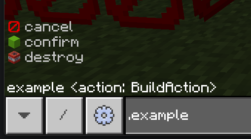

Creating Commands
📜 Overview
- Commands are a way to interact with your plugin through the in-game chat.
- They can be more versatile then a UI and, most importantly, a lot easier and faster to implement.
- In most cases, you won't even need to parse the command arguments yourself, as the API will do it for you.
- You can also create commands that will run on the local server.
- Commands can have multiple overloads, meaning you can have the same command with different parameters.
- Client sided commands can be run anywhere, with the client's prefix.
- Server sided commands can be run when you're hosting a world, the prefix is
/.
🛠️ Creating a Command
- To create a command, you need to create a class that inherits from OnixCommandBase.
- You'll need to make sure you can construct it outside, you'll be the one constructing it so how you do it is not important to the API.
- You will need to provide at least a name and description, note that conflicting names are not handled at all as of writing this on the 7th of September, 2025.
- This is also where you define if the command is client sided, server side or both.
- You can also provide a permission level, useful for server sided commands, and also for client sided commands if you want to restrict access to certain users.
- Then, create a function and mark it with the Overload attribute.
- Make sure the function returns an OnixCommandOutput for any of its outputs, this lets the API handle it properly for the client and the server.
- You can use the convenient Success(string) and Error(String) methods in OnixCommandBase to create a success or error output quickly.
Here's what it should look like, I explicitly passed in the last two parameters, but you don't have to do that if you want the defaults (client sided, permission level any)
Now sure, this command doesn't do much, but it should work. We'll expand on it in the next sections.
using OnixRuntime.Api.Entities;
using OnixRuntime.Api.OnixClient.Commands;
namespace PluginCommandExample {
public class ExampleCommand : OnixCommandBase {
public ExampleCommand() : base("example", "A simple example command to show you how they work.", CommandExecutionTarget.Client, CommandPermissionLevel.Any) { }
[Overload]
OnixCommandOutput Example() {
return Success("Hello world!");
}
}
}
Now, you have a command, how to make it work in game? Simple! We just need to register it when the plugin is loaded with Onix.Client.CommandRegistry.RegisterCommand.
Note that no cleanup is really necessary, the API will handle it when the plugin is unloaded.
// Inside your plugin's main class.
protected override void OnLoaded() {
Console.WriteLine($"Plugin {CurrentPluginManifest.Name} loaded!");
Config = new PluginCommandExampleConfig(PluginDisplayModule, true);
// Register our command here!
Onix.Client.CommandRegistry.RegisterCommand(new ExampleCommand());
}
🧩 Getting Arguments
- Getting arguments is very easy, you just add parameters to your overload function and the API will handle parsing them and calling the function for you.
- For optional arguments, you just need to provide a default value for the parameter, the API will use it if the argument is not provided.
- You can see what Parameter Types are supported but it's quite straight forward for most of them.
- Let's get some arguments!
[Overload]
OnixCommandOutput Example(string name, Block? block = null) {
return Success($"Hello {name}, do you like {block?.Name ?? "the lack of creativity you have"}?");
}
- Now, this command takes a string and an optional block.
- If you run
.example Steve oak_planks, it will say "Hello Steve, do you like oak_planks?". - Now, what if you want to get some more information about the entity running the command?
- Remember those commands have the option to run on the server side or both sides, so you can't just use
Onix.LocalPlayerand hope for the best. - Any of the function's parameters can be a OnixCommandOrigin which will give you more information.
- Note that things are default null in the case the command is ran in the menu or maybe in a command block. (Command blocks are not yet supported but you should check so they don't break if they ever get supported)
[Overload]
OnixCommandOutput Example(OnixCommandOrigin origin, BlockPos targetPosition) {
return Success($"Hello {origin.Entity?.Nametag ?? "Who are you?"}, you are {origin.BlockPosition.Distance(targetPosition)} blocks away from {targetPosition}.");
}
- Here we use the origin to get where the command was executed from, and the entity that executed it.
- We no longer need a name parameter as we get it from the entity running the command. For our command that's client only, we know it'll be our local player and we are in a world.
- If you support out of world commands, you should have checks. And you should also check if the entity is not null when on the server side.
✅ Parameters Types
- There are different types of arguments and specializations for them, here are the currently supported ones.
bool- A boolean value, can betrueorfalse.int- An integer value, can be any whole number.float- A floating point value, can be any number with decimals.string- A string value, can be any text, that can also be used with quotes and escape sequences like \n, " and things like that.- Strings have a few specializations:
- [RawString] string - A string that captures everything until the end of the argument list, this will capture EVERYTHING, including spaces and things like that. Make sure it's the last parameter!
- [SoftEnumName] string - A string that will have recommendations based on a soft enum. See the Enums Section for more information on this one.
- [CommandPath] string - This is a string that must be a specific value. If the text the user enters is not the one specified, this overload will be ruled out. This is useful for subcommands.
- The command path can also specify an item to use as an icon if you're going for something fancy.
- Entity Types
- On the client, entities, especially players might not be loaded/out of range so keep that in mind when testing.
- On the client, when your plugin is not trusted and the user is not either, only the local player is evaluated.
- Those cases are all handled for you, by giving a no entities found error. Trust is also gracefully handled so no need to worry about it.
- On the server, do what you want, you're allowed more things, entities will always be loaded and things like that.
- Player - A player entity that is loaded.
- Player[] - One or more player entities that are loaded.
- Entity - An entity that is loaded.
- Entity[] - One or more entities that are loaded.
- CommandEntitySelector - A selector that can be used to discriminate entities manually, having to gather a list of entities yourself. You should avoid this unless you know why you need it.
- BlockPos - A 3D integer position, relative
~coordinates are supported and automatically handled when using a Vec3. - CommandBlockPosition - Same as a BlockPos but you have to calculate the relative coordinates yourself. You should use a [BlockPos].(xref:OnixRuntime.Api.Maths.BlockPos) version unless you know why you need this one.
- Vec3 - A 3D float position, relative
~coordinates are supported and automatically handled when using a BlockPos. - CommandPosition - Same as a Vec3 but you have to calculate the relative coordinates yourself. You should use a [Vec3].(xref:OnixRuntime.Api.Maths.Vec3) version unless you know why you need this one.
- Vec2 - Two floating point numbers. No relative coordinates as what would they even take. This is useful if you need two points that arent an angle (rare, I know).
- Angles - A pair of yaw and pitch angles, in degrees. This will be useful for the user in intellisense as they will know the yaw/pitch order.
- Angles3 - A triplet of yaw, pitch and roll angles, in degrees. This will be useful for the user in intellisense as they will know the yaw/pitch/roll order.
- Block - A block type, this will have intellisense for all the blocks available in the game.
- The user can specify a state using data by using a comma, like
oak_button,8. - Alternatively, NBT can be used to specify a state too. This will be merged into the default state of the block. Example:
oak_button{button_pressed_bit:1b}. - The user can also specify the whole block using its entire NBT state. Example:
{"name":"minecraft:wooden_button","states":{"button_pressed_bit":1b,"facing_direction":0},"version":15393}
- The user can specify a state using data by using a comma, like
- Item - An item type, this will have intellisense for all the items available in the game.
- ItemStack - An item stack with optional aux or nbt.
- You can specify the aux using a
,after the name. Example:stone,1for granite in older bedrock versions. (not much is using aux anymore, sorry for the lack of practical examples.) - Then after the item name and/or aux, you can specify the NBT using
{}. Example:diamond_sword{Damage: 542}for a diamond sword with 542 damage. - For the count, you can just add an
intparameter after and set the count on the item stack yourself. - This is convenient as it lets the user give you any item in any stat without you having to provide any extra work.
- Note that the entire item can be specified as just NBT too.
- Example:
{"Count":1b,"Damage":0s,"Name":"minecraft:diamond_sword","WasPickedUp":0b,"tag":{"Damage":984,"display":{"Lore":["A sword that has been passed down through generations."],"Name":"§r§bThe Sword of the Ancients"},"ench":[{"id":9s,"lvl":5s}]}} - This gives a diamond sword. A little over halfway used. Named "The Sword of the Ancients" in blue. With lore and enchanted with Sharpness V.
- And you would have had to zero effort to allow the user to give you that.
- Example:
- You can specify the aux using a
- NBT Types.
- Those let you get arbitrary NBT data from the user.
- You can get either an ArrayListTag or an ObjectTag.
- If you want to support getting both, just take in an NbtTag and then check the type at runtime.
- Here are the supported parameter types:
- NbtTag - Any NBT tag (between Object/Array), you will need to check the type at runtime.
- ObjectTag - An NBT object, must start and end with
{}. - ArrayListTag - An NBT array, must start and end with
[].
- Enum Types
- Soft Enums
- I will talk more about those in the Enums Section.
- Enums
- Those are your normal C# enums.
- You can put any enum you want as a parameter and the API will handle parsing it for you.
- Names are automatically converted to
snake_casefor the user, soMyEnumValuebecomesmy_enum_value. - Normal enums get registered in the registry automatically so you don't have to do anything special for them to work.
- I will talk some more about those in the Enums Section.
- Soft Enums
- So those are the types that you can use as parameters, I know it's a bit much but all the info is there.
📃 Enums
- Anything related to enums is stored in the CommandEnumRegistry.
- Note that the names only have to be unique per plugin, so name them cleanly and don't worry about conflicts with other plugins.
⭐ Enums are a special type of parameter that lets you get a value from a predefined set of values.
- Enums are registered automatically in the parameters so you shouldn't have to manually register them in the CommandEnumRegistry.
- Enums use normal C# enums so you can use any enum you want.
- Enum names are automatically converted to
snake_casefor the user, soMyEnumValuebecomesmy_enum_value. - If you want to specify a different name for the user to type in, you can use the [CommandEnumName].
- If you want that value to have an item for its icon, use a [CommandEnumIconAttribute].
- Here is an example enum that uses those attributes, note that those attributes are optional:
public enum BuildAction {
[CommandEnumIcon("tnt")]
[CommandEnumName("destroy")]
Explode,
[CommandEnumIcon("lime_concrete")]
Confirm,
[CommandEnumIcon("barrier")]
Cancel
}
[Overload]
OnixCommandOutput Example(OnixCommandOrigin origin, BuildAction action) {
return Success($"Yeah man, I'll {action} soon...");
}
Here is what it looks like in game:

SoftEnums are a recommendation in the auto complete, it holds no weight and the user can enter any string they want.
- They will be synced automatically between the client and server.
- You can add/remove/re-register values at any time, they will be updated automatically.
- You can have icons for them too, just like normal enums.
- This is useful for data that you get at runtime only.
- Those are not registered automatically, you need to register them yourself in the CommandEnumRegistry.
- You can call this in your plugin's
OnLoaded()method or the command's constructor, if it's that specific. - RegisterSoftEnum() is the method to use to set an entire list of values.
- AddSoftEnumValue() is the method to use to add a single value.
- RemoveSoftEnumValue() is the method to use to remove a single value.
- You can call this in your plugin's
- Here is an example of registering a soft enum:
protected override void OnLoaded() {
Console.WriteLine($"Plugin {CurrentPluginManifest.Name} loaded!");
Config = new PluginCommandExampleConfig(PluginDisplayModule, true);
Onix.Client.CommandRegistry.RegisterCommand(new ExampleCommand());
string notesDirectory = Path.Combine(PluginPersistentDataPath, "Notes");
if (!Directory.Exists(notesDirectory))
Directory.CreateDirectory(notesDirectory);
CommandEnumRegistry.RegisterSoftEnum("Note", Directory.GetFiles(notesDirectory).Select(Path.GetFileNameWithoutExtension)!);
}
We read all the files in a directory and register them as a soft enum called "Note".
🛰️ Server Sided Commands
- Server sided commands can be run when you're hosting a world, the prefix is
/.. - Anyone in the world can run them, so make sure to set the permission level properly.
- You can have a specific overload be just for the server side by specifying it in the [Overload] attribute.
public class ExampleCommand : OnixCommandBase {
public ExampleCommand() : base("example", "A simple example command to show you how they work.", CommandExecutionTarget.Server, CommandPermissionLevel.Any) { }
[Overload]
OnixCommandOutput Exterminate(OnixCommandOrigin origin, Entity[] entities, bool allowSuicide = false) {
int count = 0;
foreach (Entity entity in entities) {
if (entity is Entity {IsAlive:true}) {
if (!allowSuicide && entity == origin.Entity)
continue;
entity.Kill();
count++;
}
}
return Success($"{count} entities were exterminated. (Reference???)");
}
}
- In this example, we changed our command to be server only and added an overload that takes in entities and kills them.
- If we wanted a client sided version too, we could specify which side the overload is for.
- There is an optional bool for allowing the player to kill themselves, which is false by default.
🔄 Hybrid Commands (Client and Server)
- You can have a command that works on both the client and server side by specifying
CommandExecutionTarget.Bothin the constructor. - Then, you can have overloads that are client only, server only or both.
- You can also have overloads that do both if they can work on both sides.
public class ExampleCommand : OnixCommandBase {
public ExampleCommand() : base("example", "A simple example command to show you how they work.", CommandExecutionTarget.Both, CommandPermissionLevel.Any) { }
// If we're running it as a server command, kill every entity in the list that is alive.
[Overload(CommandExecutionTarget.Server)]
OnixCommandOutput Exterminate(OnixCommandOrigin origin, Entity[] entities, bool allowSuicide = false) {
int count = 0;
foreach (Entity entity in entities) {
if (entity is Entity {IsAlive:true}) {
if (!allowSuicide && entity == origin.Entity)
continue;
entity.Kill();
count++;
}
}
return Success($"{count} entities were exterminated.");
}
// When running from the client, we can just say how many entities matched on the client side.
// This is useless but for demonstration purposes, it's fine.
[Overload(CommandExecutionTarget.Client)]
OnixCommandOutput ListEntities(OnixCommandOrigin origin, Entity[] entities, bool allowSelf = false) {
return Success($"{entities.Length} entities have been selected.");
}
// Not specifying a target means any, note that this won't expand the command's execution target.
// out of world gets ruled out automatically when things like entities, blocks or items are in the parameters.
[Overload]
OnixCommandOutput Teleport(OnixCommandOrigin origin, BlockPos position) {
if (origin.IsClientSide) {
Onix.Game.ExecuteCommand($"/tp @s {position}");
return Success(""); // empty string means no output from us as the game will do that when executing the /tp command.
} else if (origin.IsEntity) {
origin.Entity!.Position = position.Center.WithY(position.Y);
return Success($"Teleported to {position}."); // server side feedback, since we dont use /tp here, this is the only feedback.
}
return Error("Could not teleport you, you don't seem to be an entity.");
}
}
📂 Sub Commands
- You can easily create sub commands using the [CommandPath] attribute.
- Simply add the attribute in front of a string parameter and set the value to what you want the user to type.
- If the user types anything else, this overload will be ruled out and not executed.
- Here is an example of a command with sub commands:
public class NotesCommand : OnixCommandBase {
public NotesCommand() : base("notes", "Allows you to store and retrieve notes.") {
CommandEnumRegistry.RegisterSoftEnum("Note", Directory.GetFiles(GetNotesDirectory()).Select(Path.GetFileNameWithoutExtension)!);
}
string GetNotesDirectory() {
string notesDirectory = Path.Combine(PluginCommandExample.Instance.PluginPersistentDataPath, "Notes");
if (!Directory.Exists(notesDirectory))
Directory.CreateDirectory(notesDirectory);
return notesDirectory;
}
public string GetNotePath(string title) {
string notesDirectory = GetNotesDirectory();
foreach (var c in Path.GetInvalidFileNameChars()) {
title = title.Replace(c, '_');
}
return Path.Combine(notesDirectory, $"{title}.txt");
}
[Overload]
OnixCommandOutput AddNote(OnixCommandOrigin origin, [CommandPath("add")] string addPath, string title, string content) {
string filePath = GetNotePath(title);
if (File.Exists(filePath))
return Error("A note with that title already exists.");
File.WriteAllText(filePath, content);
CommandEnumRegistry.AddSoftEnumValue("Note", title);
return Success($"Note '{title}' added.");
}
[Overload]
OnixCommandOutput RemoveNote(OnixCommandOrigin origin, [CommandPath("remove")] string removePath, [SoftEnumName("Note")] string title) {
string filePath = GetNotePath(title);
if (!File.Exists(filePath))
return Error("No note with that title exists.");
File.Delete(filePath);
CommandEnumRegistry.RemoveSoftEnumValue("Note", title);
return Success($"Note '{title}' removed.");
}
[Overload]
OnixCommandOutput ViewNote(OnixCommandOrigin origin, [CommandPath("view")] string viewPath, [SoftEnumName("Note")] string title) {
string filePath = GetNotePath(title);
if (!File.Exists(filePath))
return Error("No note with that title exists.");
string content = File.ReadAllText(filePath);
return Success($"Note '{title}':\n{content}");
}
[Overload]
OnixCommandOutput ListNotes(OnixCommandOrigin origin, [CommandPath("list")] string listPath) {
var files = Directory.GetFiles(GetNotesDirectory());
if (files.Length == 0)
return Success("No notes available.");
var titles = files.Select(f => Path.GetFileNameWithoutExtension(f)!);
return Success("Available notes:\n" + string.Join("\n", titles));
}
}
- As you can see, this command lets the user add, remove, view and list notes.
- In the constructor we register the soft enum for the notes, reading all the file names in the notes directory.
- Then we have different overloads that have a different path for each sub command.
- After that, well it's just normal C# and command things!
- Don't forget to register the command in your plugin's
OnLoaded()method:
protected override void OnLoaded() {
Console.WriteLine($"Plugin {CurrentPluginManifest.Name} loaded!");
Config = new PluginCommandExampleConfig(PluginDisplayModule, true);
Onix.Client.CommandRegistry.RegisterCommand(new ExampleCommand());
Onix.Client.CommandRegistry.RegisterCommand(new NotesCommand());
}
So here you have it, that's how you create commands with varying complexities!